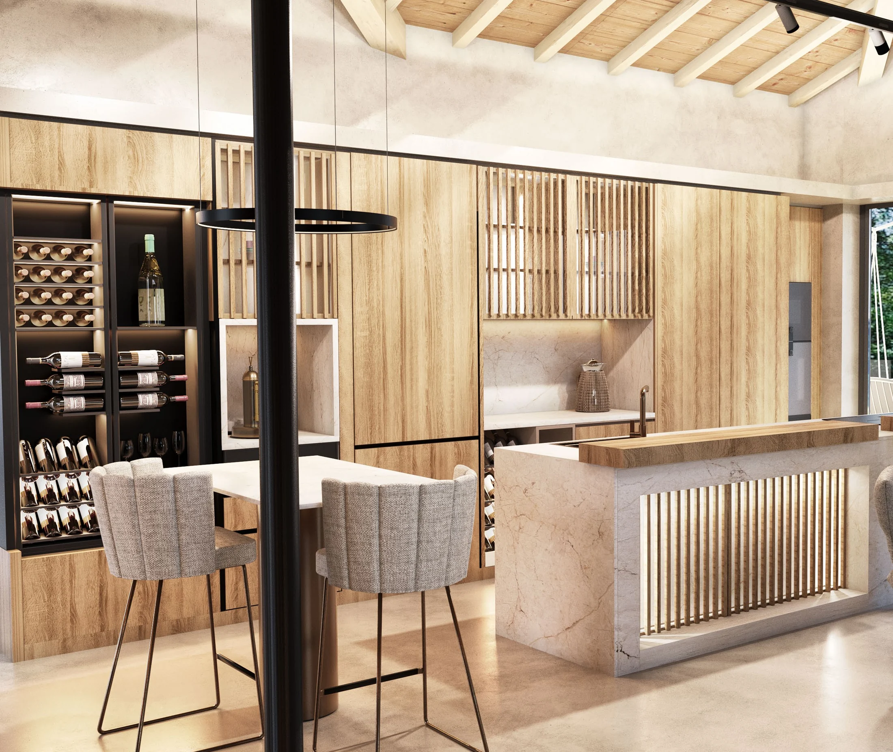
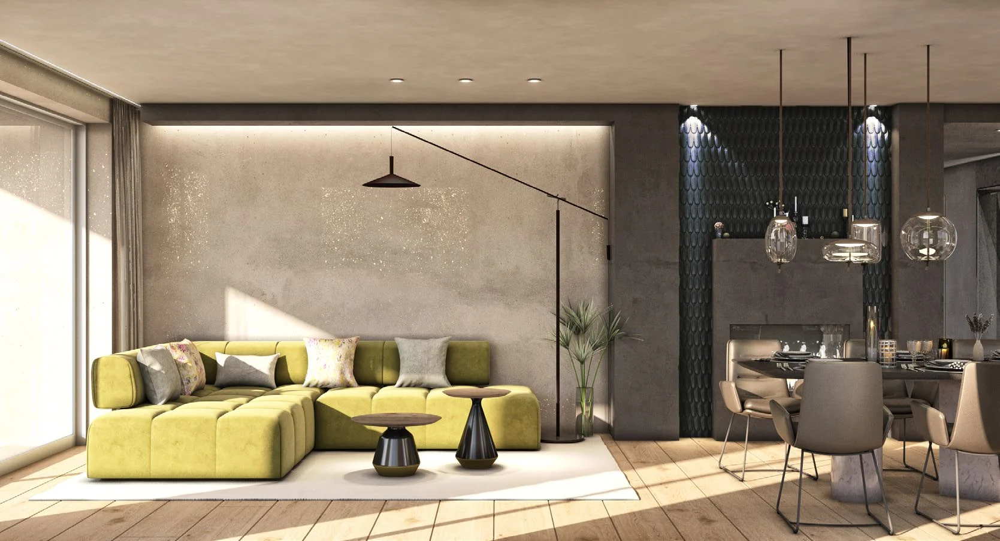
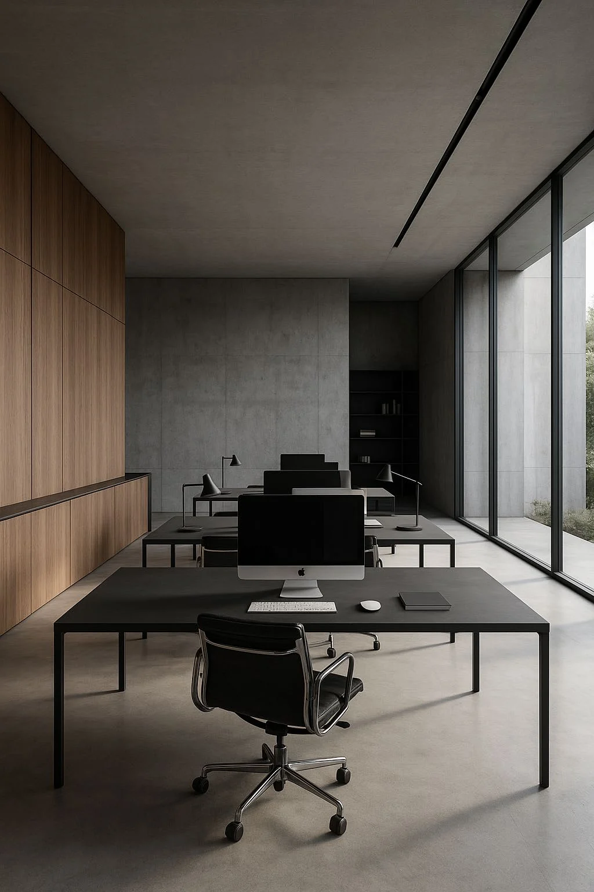
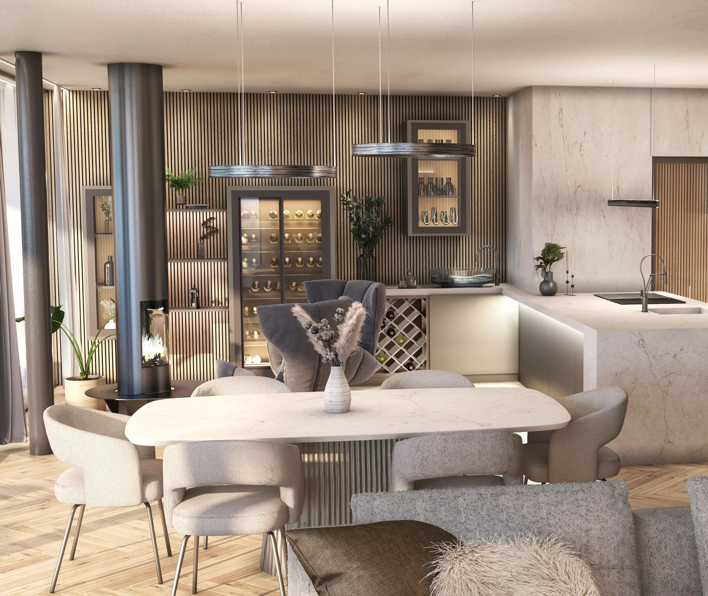
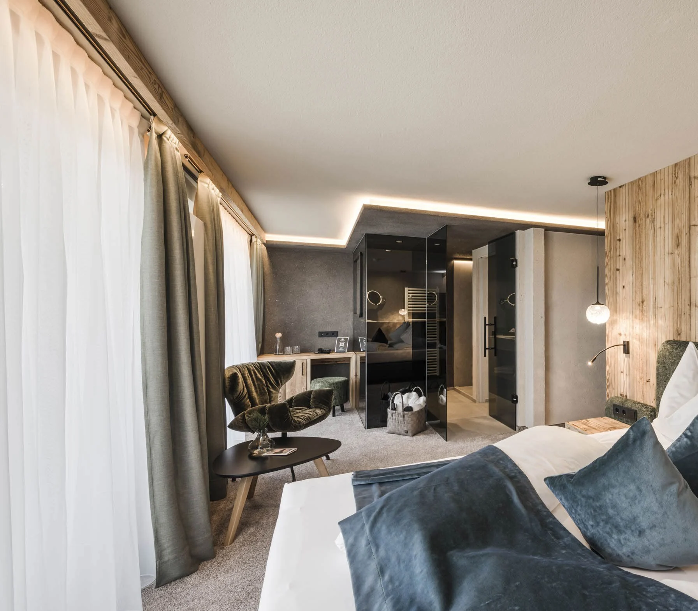
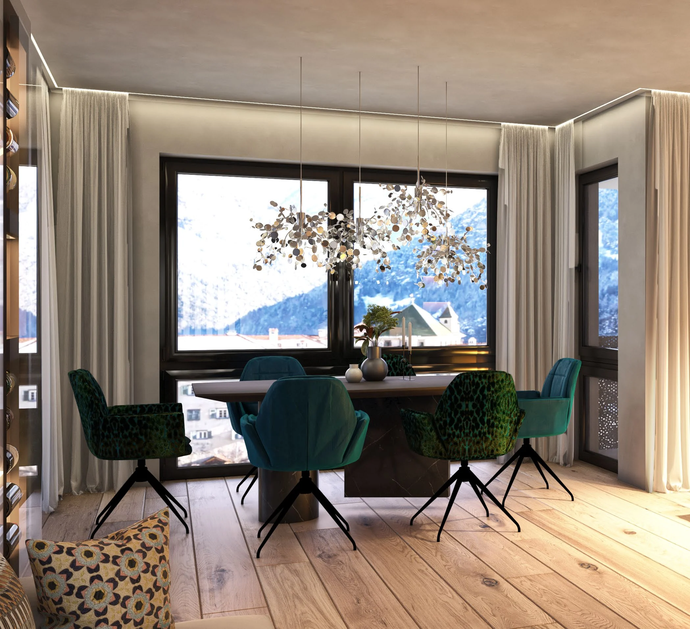
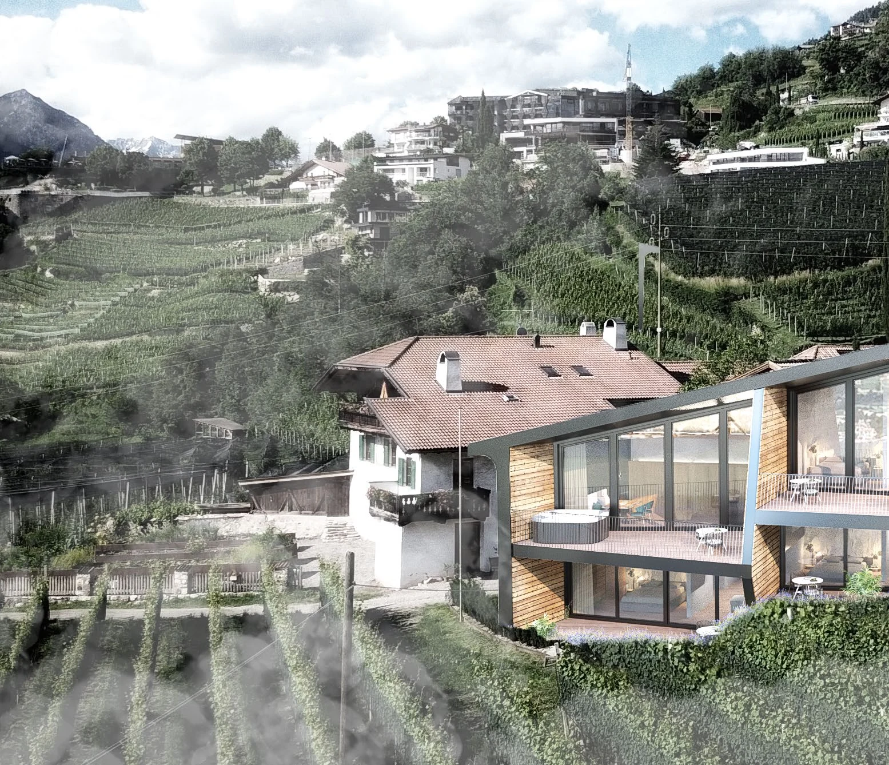

Interior Design
& Creative Direction
Freelance interior design, 3D rendering and project support for studios, hospitality and residential spaces.










Daniel Stofner
Independent interior designer working across residential, hospitality and spatial concepts.
Full profile
Independent design capacity when a project needs it.
As a freelance interior designer, I support architecture and interior studios with space planning, material concepts, bespoke furniture and photorealistic 3D renderings. I also work with private clients and hospitality teams from concept through design development.
For larger executions, complex project phases and tasks that require broader implementation capacity, I work together with Stofner Interior Design, where I am a partner. This allows Ousia Design to remain personal and flexible while drawing on an established interior design structure when a project requires it.
Based in Italy, I offer remote collaboration for projects in Zurich, Winterthur, Bolzano, Munich, New York and beyond. On-site visits and interior project coordination can be arranged according to the scope and location.
Discuss a projectHow ideas become space.
A look into project development, visual thinking and the relationship between concept and realization.